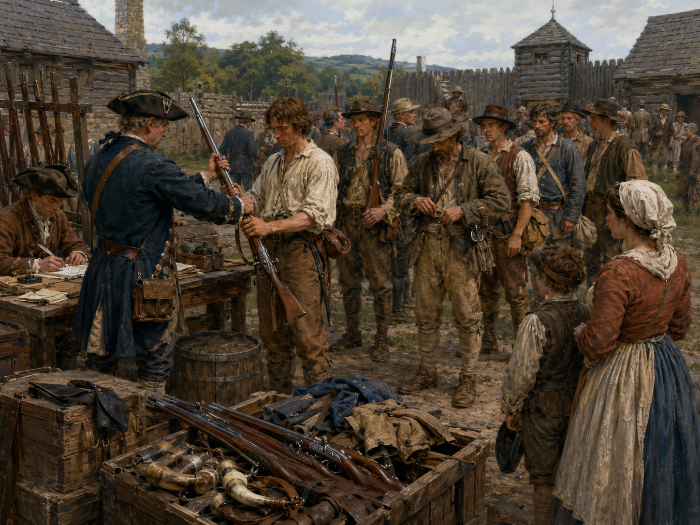

Adaptive composition
The framed illustration uses the largest approved size that the rules permit. Dense cards reduce art before reducing otherwise readable text.
Card system · adaptive frame study
This pass compares the adaptive playable-card composition, the Territory Overlay variant, and the landscape Territory frame. All three use the same ivory shell, parchment field, historical display face, rules typography, artwork framing, and footer grammar.
Design basis
The framed illustration uses the largest approved size that the rules permit. Dense cards reduce art before reducing otherwise readable text.
Action and Battle labels occupy a fixed left column while Adobe Caslon rules align in a wider right column. Territory effects use the same reading face.
Playable cards and Territories share the ivory shell, layered keylines, parchment, title face, artwork frame, and restrained three-part footer.
Territory Overlays preserve the normal title and repeat it vertically in a widened faction-colored rail for sideways table use.
Print and compare
The same portrait system adapts its illustration height to each card. The first three specimens use finished artwork to test sparse, dense, and reminder layouts; Encampment adds the Territory Overlay rail and its three-section rules structure while its illustration remains pending.
SparseComfortable baseline

Draw one card.
Add +1 to your battle total.
DenseMaximum ordinary-card pressure
Bank this as an Asset. Opposing effects cannot look at, reveal, or require you to reveal your hand, Battle Hand, or face-down cards used in battle. This does not prevent the normal battle reveal.
Add +1 to your battle total. Until the normal reveal, opposing effects cannot look at or reveal your face-down cards used in this battle.
ReminderSecondary italic voice

Discard one other card from your hand, then draw two cards.
Add +1 to your battle total.
OverlaySideways Territory identification
Place Encampment as an Overlay on a revealed Territory you occupy and control.
During the Aftermath of the battle, if you won while defending a revealed Territory you control, place Encampment on that Territory as an Overlay.
At the end of Encampment's owner's turn, if they occupy and control this Territory, they gain 1 Command. When another player gains control of this Territory, put Encampment in its owner's Graveyard.
Landscape component
The Territory frame is the normal Gauntlet visual system turned landscape: the title remains across the top, a framed illustration occupies the left side, the printed effect occupies the right, and the familiar footer spans the bottom. Approved Territory artwork will replace the pending-art treatment without changing the layout.
High GroundLandscape sibling · artwork pending
The defending player in a battle on High Ground gains advantage.
Physical review